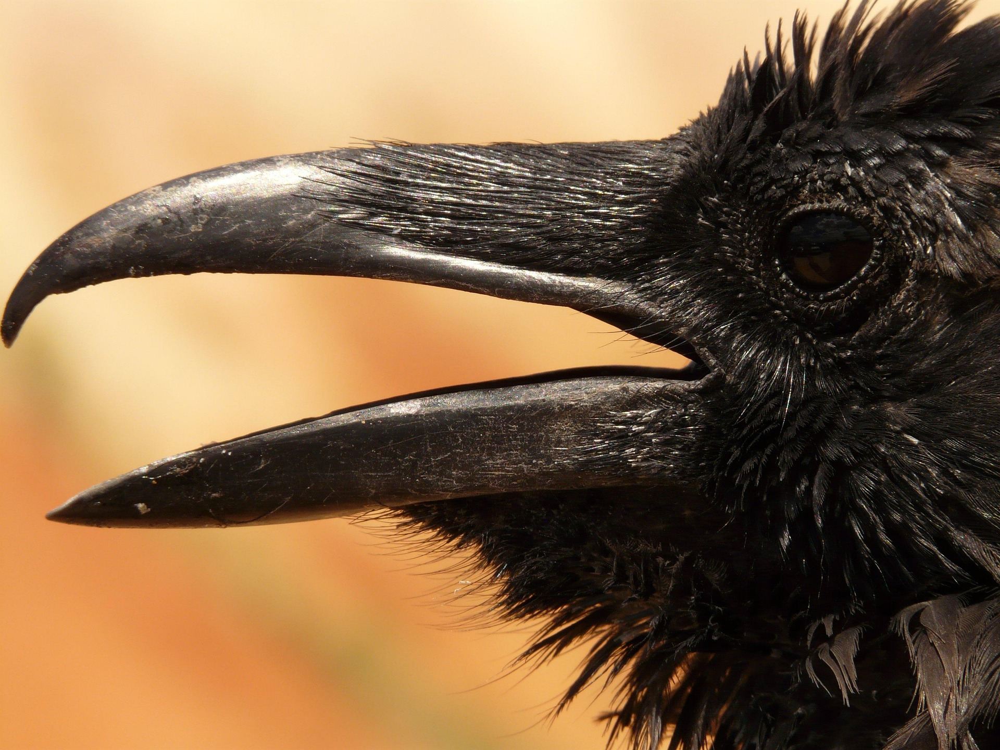

Odin's Landing
About Asgard
My Cool Ravens
Ragnarok :(
ᛏᚺᛁᛊ ᛁᛊ ᚦᛖ ᚹᛖᛒᛊᛁᛏᛖ ᛟᚠ ᛏᚺᛖ ᛟᛞᛁᚾ
That's right, it's me, the real Odin. This is my super cool website where you can learn about me, my birds (not my stinky children) and Ragnarok (bad).
Sign up!

bye
still here?
fuck off